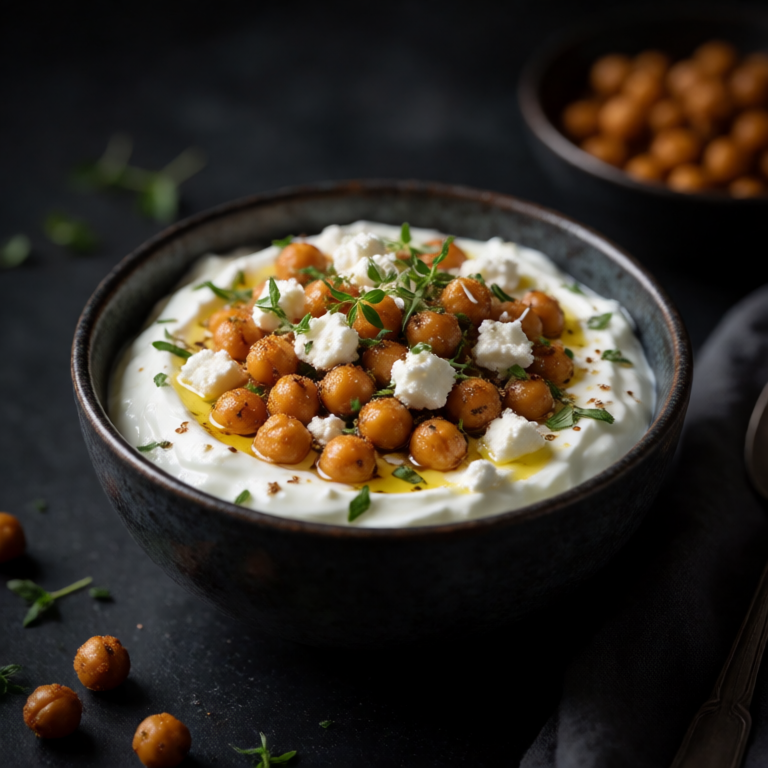
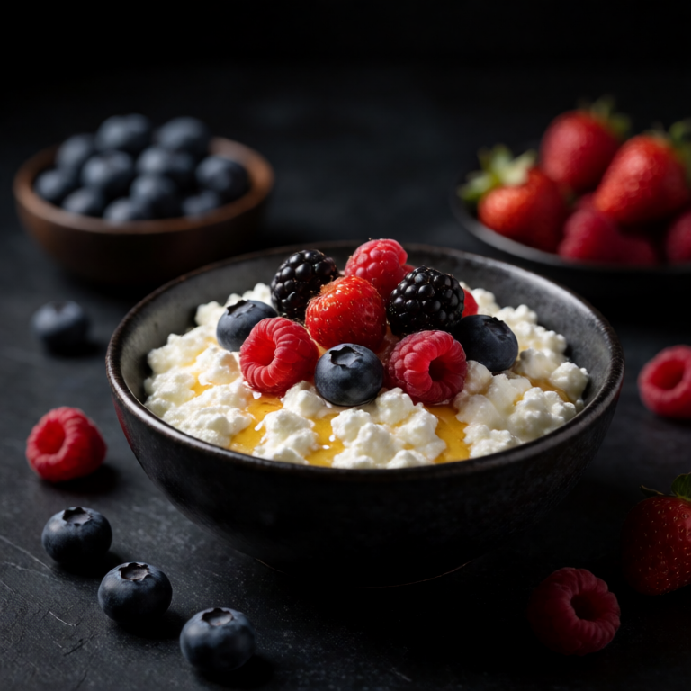
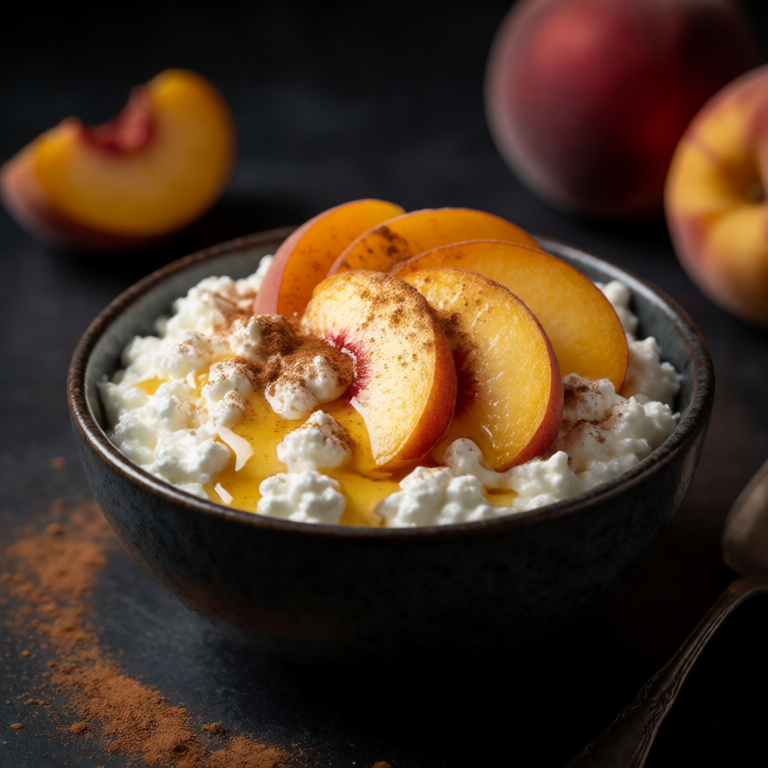

Crisp-edged tofu, warm rice, vegetables, and a spicy peanut sauce make a substantial bowl for one.
At a Glance
Prep
5m
Cook
15m
Serves
1
Difficulty
Easy
Rate this slopBe the first to rate it.
Ingredients
Method
- 01
Fry tofu
Press the tofu to remove water. Cube and fry in hot oil until golden and crispy on all sides.
- 02
Make sauce
Whisk peanut butter, soy sauce, rice vinegar, sriracha, and a splash of warm water until smooth.
- 03
Assemble
Place rice in a bowl. Top with crispy tofu. Drizzle with peanut sauce. Garnish with sesame seeds and spring onions.
Slop Notes
Pressing the tofu is crucial for getting it crispy. Use a clean towel to squeeze the water out.
Recipe by foidslop · How we create our recipes
The Weekly Slop
Seven dinners for one, one short note, every Sunday. No life story.
One email every Sunday. Unsubscribe whenever. Double opt-in. See the privacy policy.
Keep eating
Related recipes


